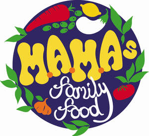

Trade Mark Journal No.2025/048 28 November 2025
UK00004296221 17 November 2025 (21,29,30,35,43)

- Class 21
- China mugs, glass mugs, ceramic mugs, glasses, serveware; cookware; Hot pots, non-electric; Coolers (Non-electric portable -) Am; Cookware; Aluminium cookware; Cookware [pots and pans]; Tableware, cookware and containers; Cookware for use in microwave ovens; Bakeware; Griddles [cooking utensils]; Cookware and tableware, except forks, knives and spoons; Griddles [non-electric cooking utensils]; Aluminium bakeware; Cooking utensils; Cooking pans; Non-electric cooking pots and pans; Skillets; Kitchen utensils of silicon; Ovenware; Kitchen utensils; Non-electric cooking pans; Cooking utensils, non-electric; Oven-to-table tableware; Household or kitchen utensils; Baking utensils; Cooking pots for use in microwave ovens; Aluminium moulds [kitchen utensils]; Saucepans; Saucepans (Earthenware -); Earthenware saucepans; Cooking graters; Grills in the nature of cooking utensils; Ceramic tableware; Turners (kitchen utensil); Pressure cooking saucepans, non-electric; Non-electric pressure cooking saucepans; Cooking pots; Tableware; Non-electric frying pans; Cooking pots, non-electric / Non-electric cooking pots; Scourers for saucepans; Portable pots and pans for camping; Dishware; Kitchen graters; Dinnerware; Disposable paperboard bakeware; Cooking utensils for barbecue use; Couscous cooking pots, non-electric; Dishes for microwave ovens; Spatulas for kitchen use; Roaster pans; Metal pans; Frying pans; Cooking strainers; Egg separators [kitchen utensils]; Tableware, except forks, knives and spoons; Tableware of porcelain; Non-electric rice cooking pots; Stir-fry pans; Meat tongs; Containers for beverages; Thermal insulated containers for food or beverages; Thermal insulated bags for food or beverages.
- Class 29
- Pickled hot peppers; Hot dog sausages; Beans cooked in soy sauce (Kongjaban); Cooked dish consisting primarily of stir-fried chicken and fermented hot pepper paste (dak-galbi); Soy sauce marinated crab (Ganjang-gejang); Vegetables pickled in soy sauce; Cranberry sauce [compote]; Dak galbi [Korean dish consisting primarily of chicken stir-fried in a fermented hot pepper paste]; Meat boiled down in soy sauce (tsukudani meat); Apple sauce (compote); Spicy pickles; Cooked dish consisting primarily of stir-fried beef and fermented soy sauce (Sogalbi); Spicy beef broth (yukgaejang); Drinks based on yogurt; Meat; Dried fish meat; Crab meat; Meat and meat products; Poultry; Fish sausages; Duck meat; Fish steak; Turkey meat; Steaks of fish; Tajine [prepared meat, fish or vegetable dish]; Fish; Tagine [prepared meat, fish or vegetable dish]; Cooked poultry; Steaks of meat; Poultry meatballs; Roast poultry; Fried meat; Cooked fish; Poultry salads; Meat jellies; Cooked meat; Sausage meat; Frozen poultry; Canned meat; Meat, canned; Tuna fish; Fish eggs for human consumption; Canned fish; Fish, canned; Meat stocks; Roast meat; Frozen meat; Meat, frozen; Fresh poultry; Deep-frozen poultry; Dishes of fish; Fish, seafood and molluscs spreads; Fresh meat; Salted meat; Quenelles [meat]; Fish croquettes; Canned cooked meat; Fish fillets; Fillets (Fish -); Cooked meat dishes; Frozen cooked fish; Tinned meat; Fish, seafood and molluscs, not live; Smoked fish; Frozen fish; Frozen meat products; Meat pate; Chicken sausages; Grilled fish fillets; Prepared meals made from poultry [poultry predominating]; Fish products being frozen; Fish balls; Poultry substitutes; Prepared meals made from meat [meat predominating]; Beef tallow [for food]; Foods made from fish; Ground meat; Food products made from fish; Fish (Food products made from -); Dried meat; Galbi [grilled meat dish]; Tinned fish; Fish jellies; Fish with chips; Salted fish; Fish (Salted -); Tuna fish [not live]; Fish crackers; Fish stock; Fish cakes; Bottled cooked meat; Tuna fish [preserved]; Drinks made from dairy products; Dairy-based beverages; Fruit-based snack food; Snack food (Fruit-based -); Milk-based beverages; Jellies for food, other than confectionery; Milk beverages; Desserts made from milk products; Seafood products; Vegetable-based snack food.
- Class 30
- Hot sauce; Sriracha hot chili sauce; Hot chili pepper sauce; Chili sauce; Hot chocolate; Sambal sauce (ground red pepper sauce); Ketchup [sauce]; Picante sauce; Teriyaki sauce; Barbecue sauce; Tomato sauce; Sauce (Tomato -); Spaghetti sauce; Hot chili bean paste; Taco sauce; Fermented hot pepper paste (gochujang); Cheese sauce; Shrimp sauce; Pesto [sauce]; Sweet and sour sauce; Spicy sauces; Peanut sauce; Soy sauce; Kebab sauce; Hot chocolate mixes; Remoulade sauce; Cranberry sauce [condiment]; Hot pepper powder [spice]; Fish sauce; Artichoke sauce; Apple sauce [condiment]; Hot dog sandwiches; Tartare sauce; Hot cocoa mix; Concentrated sauce; Sauce [edible]; Vegan hot chocolate; Hot sausage and ketchup in cut open bread rolls; Sauce powders; Sauces for chicken; Chocolate sauces; Sauce mixes; Oyster sauce; Sauces for use with pasta; Sauces for pasta; Pasta sauces; Pepper sauces; Pizza sauces; Sauces for rice; Salsa sauces; Curry sauces; Chili pepper paste being condiment; Dried chili peppers seasoning; Salad sauces; Chili oil for use as a seasoning or condiment; Korean soy sauce [ganjang]; Horseradish sauces; Satay sauces; Truffle cream sauces; Savory sauces; Sauces for barbecued meat; Seasoned soy sauce (Chiyou); Mayonnaise-based sauces; Sauces; Mushroom sauces; Chili seasoning; Savory sauces used as condiments; Basting sauces; Chicken gravy; Chili seasonings; Dried sauce in powder form; Sauces for ice cream; Petits fours; Pâtés en croûte; Beverages based on tea; Beverages based on coffee; Drinks based on cocoa; Beverages based on chocolate; Poultry and game meat pies; Seasoned coating for meat, fish, poultry; Poultry pies; Meat pies; Pies (Meat -); Boxed lunches consisting of rice, with added meat, fish or vegetables; Fish dumplings; Fish sandwiches; Sauces for frozen fish; Meat gravies; Gravies (Meat -); Frozen pastry stuffed with meat and vegetables; Pies containing poultry; Pastries consisting of vegetables and poultry; Pies containing fish; Snack food products consisting of cereal products; Snack food products made from cereals; Flavourings of tea for food or beverages; Chocolate food beverages not being dairy-based or vegetable based; Snack food products made from rice; Vanilla flavourings for food or beverages; Snack food products made from soya flour; Snack food products made from potato flour; Edible gold for decorating food and beverages; Snack food products made from maize flour; Snack food products made from rusk flour; Chocolate-based beverages; Snack food products made from rice flour; Fruit flavourings for food or beverages, except essences; Gluten-free bakery products; Cocoa-based ingredients for confectionery products; Chocolate-based beverages with milk; Cocoa-based beverages; Tea-based beverages; Chocolate beverages; Flavourings for beverages; Malt-based food preparations; Tea-based beverages with fruit flavoring; Cereal-based snack food; Chocolate decorations for confectionery items; Chocolate confectionery products; Confectionery chocolate products.
- Class 35
- Wholesale services in relation to food cooking equipment; Retail services in relation to food cooking equipment; Online ordering services in the field of restaurant take-out and delivery; Retail services in relation to cookware; Retail services in relation to non-alcoholic beverages; Wholesale services in relation to non-alcoholic beverages; Advertising; Advertising and marketing; Advertising copywriting; Advertising and publicity; Advertising, promotional and marketing services; Banner advertising; Online advertising; Electronic billboard advertising.
- Class 43
- Catering; Catering services; Business catering services; Catering services for hospitality suites; Catering services for company cafeterias; Catering services for providing European-style cuisine; Mobile catering services; Outside catering services; Catering services for schools; Catering services for educational establishments; Catering services for hospitals; Providing food and drink catering services for convention facilities; Providing food and drink catering services for exhibition facilities; Food and drink catering for banquets; Catering in fast-food cafeterias; Food and drink catering; Catering services for conference centers; Providing food and drink catering services for fair and exhibition facilities; Charitable services, namely providing food and drink catering; Food and drink catering for institutions; Catering for the provision of food and drink; Catering services for retirement homes; Catering services for nursing homes; Food and drink catering for cocktail parties; Providing temporary accommodation as part of hospitality packages; Services for providing food; Mobile restaurant services; Take-away food services; Providing food and drink for guests in restaurants; Restaurant services for the provision of fast food; Corporate hospitality (provision of food and drink); Serving food and drink for guests in restaurants; Hospitality services [food and drink]; Snack-bar services; Services for providing food and drink; Provision of food and beverages; Providing food and beverages; Preparation of food and beverages; Take-away food and drink services; Takeaway food and drink services; Providing food and drink in doughnut shops; Services for the preparation of food and drink; Food and drink preparation services; Serving food and drinks; Provision of food and drink in restaurants; Serving food and drink in doughnut shops.
M.A.M.A's Family Food Limited